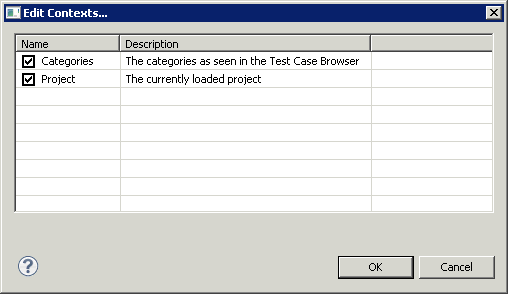

For many of the guidelines in the Project properties, you can set the contexts they should be valid for. Some of the available contexts include Test Cases , Test Suites , or the whole Project .
To edit the context for a guideline:
- In the Project properties, under the section Teststyle, select the guideline you want to configure.
- Click "Edit context" to open the context dialog.
- In the dialog (3.42), you can see and edit any available contexts for this guideline.
- To activate a context, select the checkbox next to it. To deactivate a context, deselect its checkbox.
- Confirm your changes in this dialog using "OK".
- Click "OK" in the Project properties to save the changes.
![\includegraphics[height=2cm]{danger}](img1.jpg) |
If you enter an invalid value, the default value will be used in its place. |
Figure 3.42: Edit Contexts
|

|
Copyright BREDEX GmbH 2014. Made available under the Eclipse Public License v1.0.